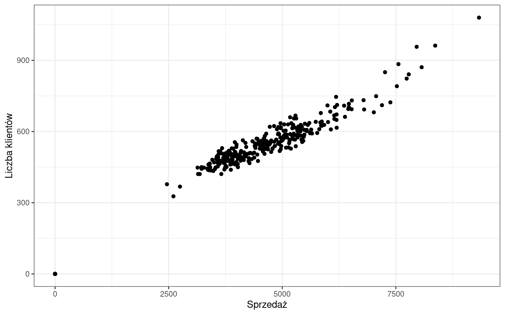
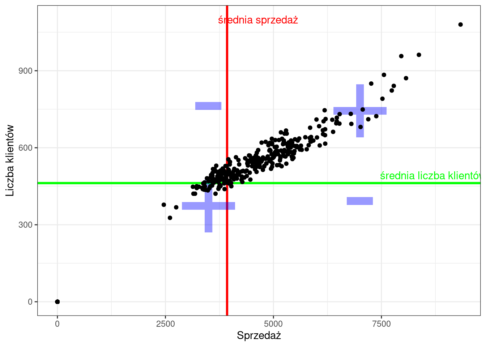

4 Korelacje
Korelacja [łac.], mat. wzajemne powiązanie, współzależność zjawisk lub obiektów; w teorii prawdopodobieństwa i statystyce — współzależność liniowa zmiennych losowych (jej liczbową miara jest współczynnik korelacji) [źródło: słownik PWN].
4.1 Cechy jakościowe
Celem analizy współzależności jest określenie siły związku pomiędzy dwiema cechami jakościowymi. Sprawdźmy czy istnieje zależność pomiędzy wynikiem z egzaminu a płcią?
Podstawą takiej analizy jest tablica kontyngencji albo tablica krzyżowa. W przypadku obserwacji statystycznej dotyczącej dużej ilości zmiennych, operowanie wartościami szczegółowymi jest uciążliwe. W celu stwierdzenia istnienia lub braku związku korelacyjnego konstruuje się tablicę korelacyjną. Na skrzyżowaniu kolumn z wierszami wpisuje się liczebności jednostek zbiorowości statystycznej, u których zaobserwowano jednoczesne występowanie określonej wartości \(x_{i}\) i \(y_{i}\). Ogólna postać tablicy krzyżowej jest następująca:
| cecha X / cecha Y | \(y_{1}\) | \(y_{2}\) | \(\cdots\) | \(y_{j}\) | \(\cdots\) | \(y_{r}\) | \(\sum\limits_{j}\) |
|---|---|---|---|---|---|---|---|
| \(x_{1}\) | \(n_{11}\) | \(n_{12}\) | \(\cdots\) | \(n_{1j}\) | \(\cdots\) | \(n_{1r}\) | \(n_{1.}\) |
| \(x_{2}\) | \(n_{21}\) | \(n_{22}\) | \(\cdots\) | \(n_{2j}\) | \(\cdots\) | \(n_{2r}\) | \(n_{2.}\) |
| \(\cdots\) | \(\cdots\) | \(\cdots\) | \(\cdots\) | \(\cdots\) | \(\cdots\) | \(\cdots\) | \(\cdots\) |
| \(x_{i}\) | \(n_{i1}\) | \(n_{i2}\) | \(\cdots\) | \(n_{ij}\) | \(\cdots\) | \(n_{ir}\) | \(n_{i.}\) |
| \(\cdots\) | \(\cdots\) | \(\cdots\) | \(\cdots\) | \(\cdots\) | \(\cdots\) | \(\cdots\) | \(\cdots\) |
| \(x_{k}\) | \(n_{k1}\) | \(n_{k2}\) | \(\cdots\) | \(n_{kj}\) | \(\cdots\) | \(n_{kr}\) | \(n_{k.}\) |
| \(\sum\limits_{i}\) | \(n_{.1}\) | \(n_{.2}\) | \(\cdots\) | \(n_{.j}\) | \(\cdots\) | \(n_{.r}\) | \(n\) |
Jak wynika z tablicy zmienna losowa \(X\) przyjmuje \(k\) wariantów (i=1,2,…,k), zaś zmienna losowa \(Y\) przyjmuje \(r\) wariantów (j=1,2,…,r).
Symbol \(n_{.j}\) oznacza liczbę jednostek, które mają wariant \(y_{j}\) zmiennej Y, natomiast symbol \(n_{i.}\) - liczbę jednostek, które mają wariant \(x_{i}\) zmiennej X. Symbole \(n_{ij}\) oznaczają liczbę jednostek, które posiadają jednocześnie wariant \(x_{i}\) cechy X i warianty \(y_{j}\) cechy Y. Symbol \(n\) oznacza liczebność próby, przy czym:
\[n=\sum\limits_{i=1}^{k}{n_{i.}}=\sum\limits_{j=1}^{r}{n_{.j}}=\sum\limits_{i=1}^{k}\sum\limits_{j=1}^{r}{n_{ij}}\]
W analizowanym przykładzie pozyskaliśmy informację od 500 osób na temat wyniku egzaminu oraz płci. Tablica krzyżowa tych danych wygląda następująco:
| Płeć / Wynik | Nie zdany | Zdany | Suma |
|---|---|---|---|
| Mężczyzna | 100 | 70 | 170 |
| Kobieta | 130 | 200 | 330 |
| Suma | 230 | 270 | 500 |
Do odpowiedzi na pytanie czy istnieje zależność pomiędzy tymi cechami wykorzystamy statystykę chi-kwadrat (\(\chi^2\)). Nazwę tej statystyki czytamy tak samo jak piszemy.
W pierwszym kroku musimy obliczyć oczekiwane (teoretyczne) częstości dla każdej komórki czyli wartości jakie musiałyby występować, żeby zależności nie było. Wzór na liczebności teoretyczne jest następujący:
\[\hat{n}_{ij}=\frac{n_{i.} \cdot n_{.j}}{n}\]
Przykładowo, liczebność teoretyczna dla mężczyzn, którzy nie zdali egzaminu to iloczyn liczby wszystkich mężczyzn i liczby wszystkich, którzy nie zdali egzaminu podzielony przez wszystkie obserwacje:
\[\hat{n}_{11}=\frac{170 \cdot 230}{500}=78,2\]
Liczebności oczekiwane po wstawieniu do tabeli:
| Płeć / Wynik | Nie zdany | Zdany | Suma |
|---|---|---|---|
| Mężczyzna | 78,2 | 91,8 | 170 |
| Kobieta | 151,8 | 178,2 | 330 |
| Suma | 230 | 270 | 500 |
Częstości teoretyczne nie muszą być wartościami całkowitymi, ale suma w wierszu, kolumnie i dla całej tablicy krzyżowej musi pozostać taka sama.
W kolejnym kroku wyznaczamy standardowe współczynniki różnicy pomiędzy częstościami oczekiwanymi a zaobserwowanymi. Suma tych współczynników da nam wartość statystyki \(\chi^2\).
\[\chi^{2}=\sum\limits_{i=1}^{k}\sum\limits_{j=1}^{r}{\frac{(n_{ij}-\hat{n}_{ij})^2}{\hat{n}_{ij}}}\]
gdzie:
- \(r\) - liczba wariantów cechy Y,
- \(k\) - liczba wariantów cechy X,
- \(n_{ij}\) - liczebności empiryczne dla i-tego wariantu cechy X i j-tego wariantu cechy Y,
- \(\hat{n}_{ij}\) - liczebności teoretyczne dla i-tego wariantu cechy X i j-tego wariantu cechy Y.
\[\chi^{2}=\frac{(100-78,2)^2}{78,2}+\frac{(70-91,8)^2}{91,8}+\frac{(130-151,8)^2}{151,8}+\frac{(200-178,2)^2}{178,2}=17\]
W przypadku, gdy dysponujemy tablicą o wymiarach 2x2 możemy skorzystać z prostszego sposobu wyznaczenia statystyki \(\chi^2\) korzystając ze wzoru. Jeśli tablica kontyngencji jest w postaci:
| cecha X / cecha Y | \(y_{1}\) | \(y_{2}\) | \(n_{i.}\) |
|---|---|---|---|
| \(x_{1}\) | a | b | a+b |
| \(x_{2}\) | c | d | c+d |
| \(n_{.j}\) | a+c | b+d | n |
a liczebności w komórkach większe niż 5 to wzór na chi-kwadrat jest następujący:
\[\chi^{2}=\frac{n \cdot (a \cdot d - b \cdot c)^2}{(a+b) \cdot (c+d) \cdot (a+c) \cdot (b+d)}\]
W przypadku występowania częstości mniejszych od 5 musimy zastosować wzór uwzględniający poprawkę Yatesa:
\[\chi^{2}=\frac{n \cdot (|a \cdot d - b \cdot c| - 0,5 \cdot n)^2}{(a+b) \cdot (c+d) \cdot (a+c) \cdot (b+d)}\]
W analizowanym przypadku zależności płci i wyniku z egzaminu wartości w komórkach a, b, c i d są większe od 5, więc można wykorzystać pierwszą formułę:
\[\chi^2=\frac{500\cdot(100\cdot200-70\cdot130)^2}{170\cdot330\cdot230\cdot270}=\frac{59405000000}{3483810000}=17\]
Sama wartość statystyki chi-kwadrat nie informuje sile zależności pomiędzy analizowanymi zmiennymi. W celu określenia siły zależności musimy wyznaczyć jedną z dostępnych miar korelacji: współczynnik V-Cramera lub współczynnik zbieżności T-Czuprowa:
\[V=\sqrt{\frac{\chi^2}{n \cdot min(k-1,r-1)}}\]
\[T=\sqrt{\frac{\chi^2}{n \cdot \sqrt{(k-1)(r-1)}}}\]
gdzie:
- \(\chi^2\) - wyznaczona wartość statystyki \(\chi^2\),
- \(n\) - liczba wszystkich obserwacji,
- \(k\) - liczba kolumn tabeli kontyngencji bez sumy (liczba wariantów pierwszej cechy),
- \(r\) - liczba wierszy tabeli kontyngencji bez sumy (liczba wariantów drugiej cechy).
Możemy przyjąć pewne umowne progi dotyczące interpretacji tych miar:
- od 0,00 do 0,29 - słaby związek pomiędzy zmiennymi,
- od 0,30 do 0,49 - umiarkowany związek pomiędzy zmiennymi,
- od 0,50 do 1,00 - silny związek pomiędzy zmiennymi.
W naszym przykładzie współczynnik V-Cramera jest równy współczynnikowi T-Czuprowa i wynosi \(V=T=0,18\), co oznacza, że pomiędzy płcią a wynikiem z egzaminu występuje słaba zależność.
Miary korelacji cech jakościowych w Excelu
Niestety, aktualnie w MS Excel nie ma funkcji, które umożliwiają obliczenie statystyki \(\chi^2\). Istnieje natomiast funkcja CHI.TEST, która liczy statystykę \(\chi^2\) ale jej nie zwraca. Informuje jedynie o istotności statystycznej, która wykracza poza zakres materiału realizowanego w ramach tych zajęć.
Zadanie
Oceń siłę zależności pomiędzy faktem wejścia promocji, a liczbą klientów (poniżej/powyżej średniej) w sklepie numer 7.
4.2 Cechy ciągłe
W odróżnieniu do cech jakościowych, w przypadku cech ciągłych oprócz siły zależności określamy także kierunek tej zależności pomiędzy dwoma zmiennymi. Silnie skorelowane ze sobą zmienne zachowują się “jak gdyby równocześnie się poruszały”.
Sprawdźmy czy liczba klientów jest skorelowana ze sprzedażą w sklepie nr 1. Pierwszym krokiem w analizie korelacji jest stworzenie wykresu rozrzutu:
Na tej podstawie możemy już stwierdzić, że zależność jest dodatnia - wzrost wartości jednej cechy pociąga za sobą wzrost wartości drugiej cechy:
- wzrost temperatury, większa sprzedaż lodów;
- wzrost wynagrodzenia, zwiększenie wydatków;
- mniej czasu spędzonego na działaniach marketingowych, mniej klientów.
Z korelacją ujemną mielibyśmy do czynienia, gdy wartości jednej cechy by rosły, a drugiej malały. Przykłady ujemnej korelacji:
- liczba nieobecności na zajęciach jest zwykle związana z niższymi ocenami;
- większa prędkość pociągu, krótszy czas dotarcia do stacji końcowej;
- spadek temperatury, wzrost sprzedaży grzejników.
Wartością liczbową, która określa kierunek korelacji jest kowariancja. Wyznaczenie kowariancji polega na policzeniu różnic wartości obu cech od średniej, a następnie ich przemnożeniu i uśrednieniu, zgodnie ze wzorem:
\[cov(x,y)=cov(y,x)=\frac{1}{n}\sum\limits_{i=1}^{n}{(x_{i}-\bar{x})\cdot(y_{i}-\bar{y})}\]
Znak kowariancji determinuje kierunek zależności, który jest ustalany na podstawie iloczynu różnic pomiędzy wartościami średnich a analizowanymi cechami. Sumowane są wartości dodatnie i ujemne, co pokazuje poniższy wykres:

Jeśli kowariancja będzie:
- \(cov(x,y)=0\) — brak zależności,
- \(cov(x,y)<0\) — ujemna zależność,
- \(cov(x,y)>0\) — dodatnia zależność.
W przypadku sklepu nr 1 kowariancja wynosi 4.50279^{5}, co oczywiście pociąga za sobą dodatnią zależność. Na podstawie kowariancji nie możemy natomiast wyznaczyć siły zależności ponieważ jest wyznaczona w dziwnych jednostkach - osobo-euro. Poza tym może przyjąć wartości z całego zakresu liczb rzeczywistych: \((-\infty;+\infty)\).
Standaryzując kowariancję z wykorzystaniem odchylenia standardowego każdej cechy otrzymamy współczynnik korelacji liniowej Pearsona:
\[r_{xy}=r_{yx}=\frac{cov(X,Y)}{S_{x}\cdot S_{y}}\]
lub
\[r_{xy}=\frac{\sum\limits_{i=1}^{n}{(x_{i}-\bar{x})\cdot(y_{i}-\bar{y})}}{\sqrt{\sum\limits_{i=1}^{n}{(x_{i}-\bar{x})^2\cdot(y_{i}-\bar{y})^2}}}\]
Współczynnik ten jest wielkością unormowaną, przyjmuje wartości z przedziału \(r\in<-1;1>\).
Jeśli:
- \(r_{xy}=1\) — korelacja dodatnia doskonała,
- \(0<r_{xy}<1\) — korelacja dodatnia niedoskonała (słaba/umiarkowana/silna)
- \(r_{xy}=0\) — brak zależności,
- \(-1<r_{xy}<0\) — korelacja ujemna niedoskonała (słaba/umiarkowana/silna)
- \(r_{xy}=-1\) — korelacja ujemna doskonała.
W sklepie nr 1 współczynnik korelacji liniowej Pearona wynosi 0.98, co oznacza, że pomiędzy wartością sprzedaży a liczbą klientów występuje silna dodatnia korelacja liniowa.
W przypadku, gdy w zbiorze analizowanych cech znajdą się wartości odstające, które zaburzają liniowość relacji, współczynnik korelacji liniowej może nie spełniać swojej funkcji. Wówczas należy skorzystać ze współczynnika korelacji rang Spearmana, który jest współczynnikiem korelacji liniowej Pearsona, ale obliczanym na rangach.
Rangowanie polega na posortowaniu wartości jednej cechy rosnąco - przypisanie kolejnych wartości od \(1\) do \(n\) (jak w sporcie), na następnie powtórzenie operacji dla drugiej cechy. Jeśli jakaś wartość będzie się powtarzać (ex aequo), wówczas wyznaczamy wartość tzn. rangi wiązanej - średniej arytmetycznej z rang tej wartości.
W Excelu można wyznaczyć wyłącznie współczynnik korelacji liniowej Pearsona korzystając z funkcji:
- PEARSON(tablica1, tablica2).
Korelacja nie oznacza przyczynowości - informuje jedynie o współwystępowaniu cech. Do analizy przyczyno-skutkowej służą metody regresji.
Gra - zgadnij współczynnik korelacji
Zadanie
Przeanalizuj sprzedaż oraz liczbę klientów w sklepie nr 7 w maju. Utwórz wykres rozrzutu oraz oblicz i zinterpretuj współczynnik korelacji liniowej Pearsona korzystając z funkcji Excela.